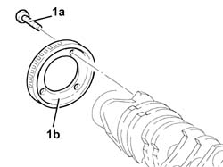

1024A28 CRANKSHAFT PHONIC WHEEL FOR RPM AND TIMING SENSOR - REPLACE WITH CRANKSHAFT REMOVED
- Path
- Procedures > 10 ENGINE > 1024 CRANKSHAFT AND FLYWHEEL > 1024A CRANKSHAFT > 1024A28 CRANKSHAFT PHONIC WHEEL FOR RPM AND TIMING SENSOR - REPLACE WITH CRANKSHAFT REMOVED
- Kind
- repair procedure (removal / refitting; the operation number is the code)
- Applies to
- engines: 1.9 JTD 8v, 2.4 JTD 20v; all production periods
- Interactive page
- https://sloeber94.github.io/elrnDB-fCrm/en/#/194000168
Applies to: engines: 1.9 JTD 8v; all production periods
 Removing
Removing
 Refitting
Refitting1. Undo the bolts (1a) and remove the phonic wheel for the rpm and timing sensor (1b) from the crankshaft.

Applies to: engines: 1.9 JTD 8v; all production periods
Refitting
RemovingFit a new rpm and timing sensor flywheel on the crankshaft and secure it tightening the bolts.
Applies to: engines: 2.4 JTD 20v; all production periods
Removing
Refitting1. Undo the bolts (1a) and remove the phonic wheel for the rpm and timing sensor (1b) from the crankshaft.

Applies to: engines: 2.4 JTD 20v; all production periods
Refitting
RemovingFit a new rpm and timing sensor flywheel on the crankshaft and secure it tightening the bolts to the recommended torque.
Value daNm | Fastening | Component | Ø | |
|---|---|---|---|---|
1a | 2.3 - 3.3 | Bolt | PHONIC WHEEL ON CRANKSHAFT | M5 |